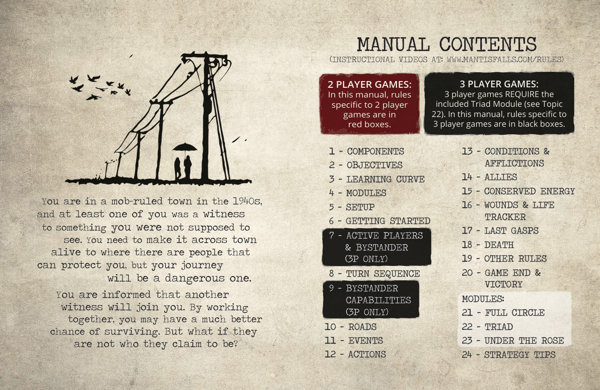
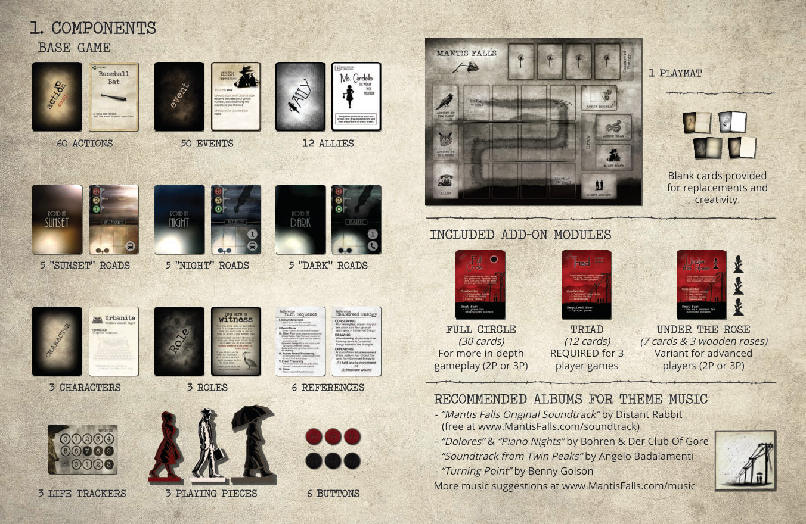
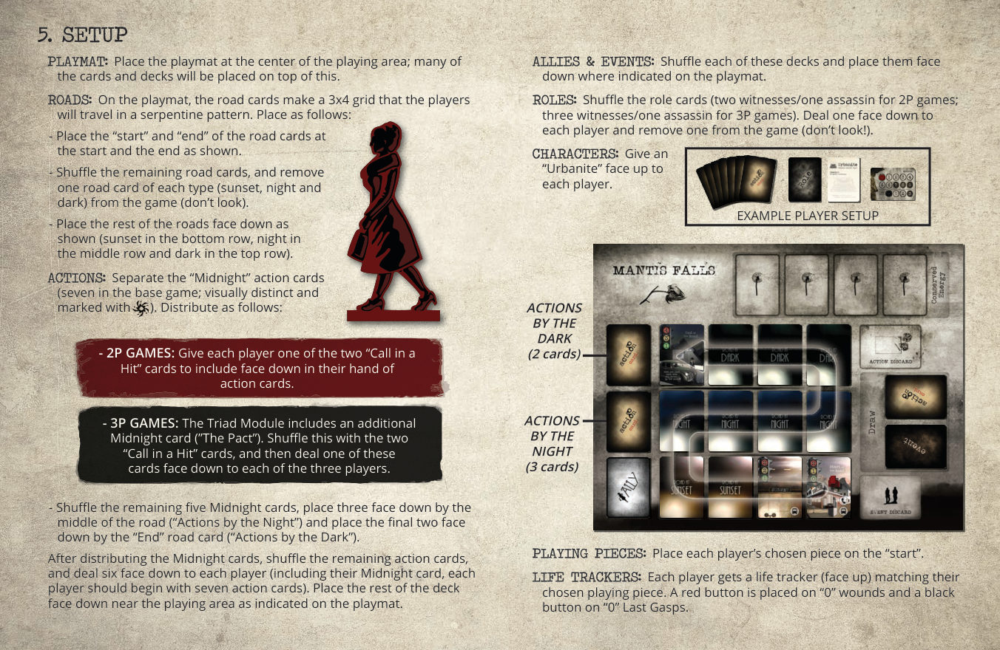
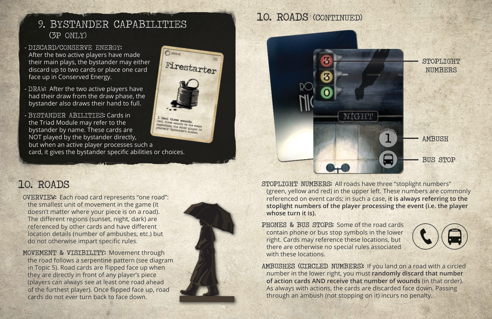
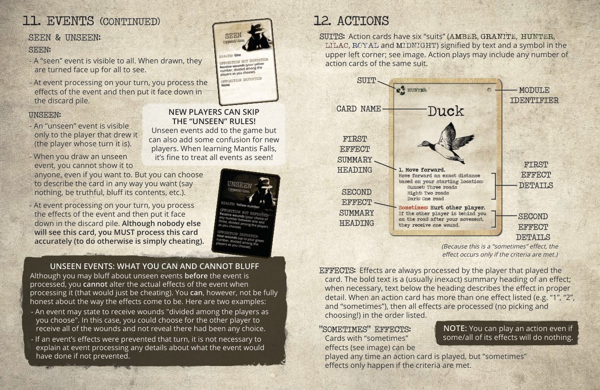
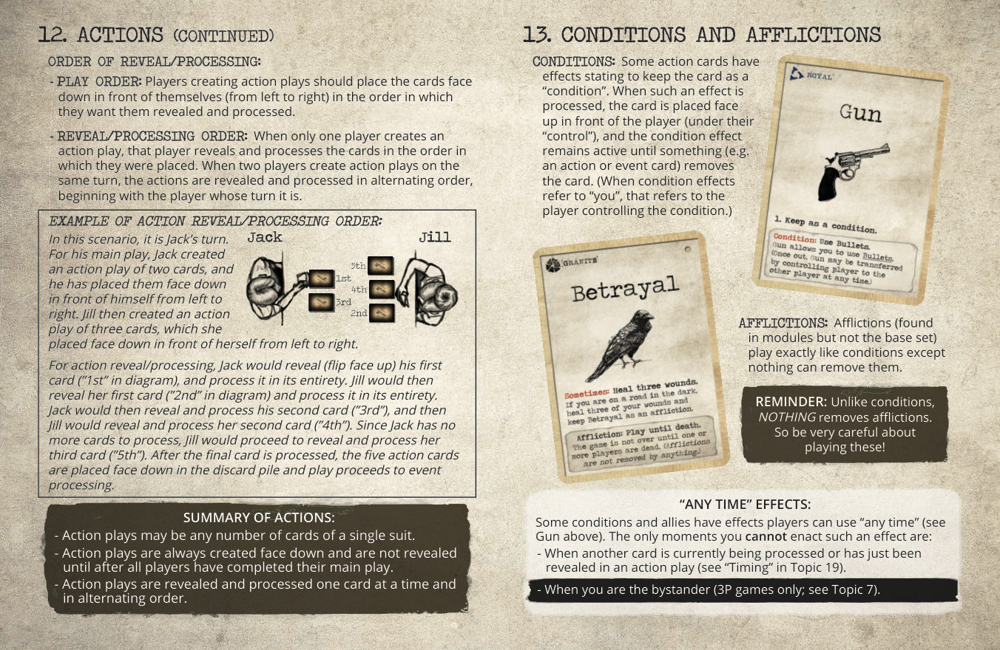
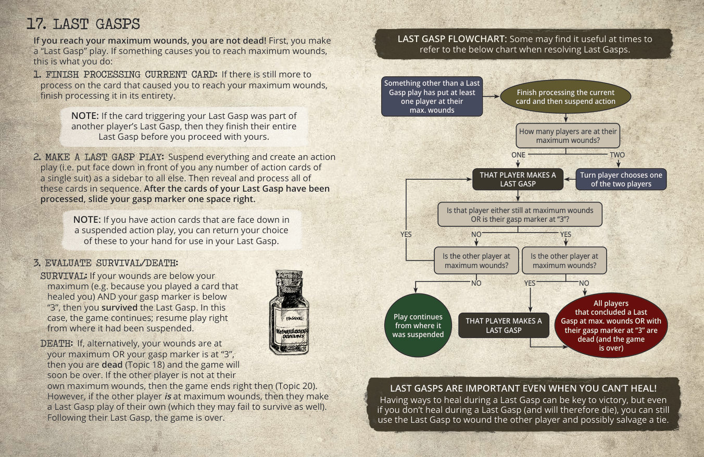
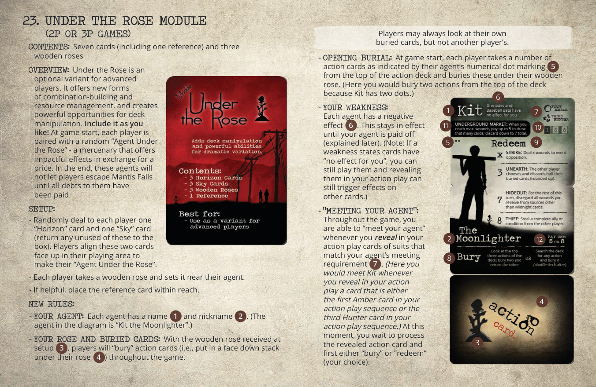
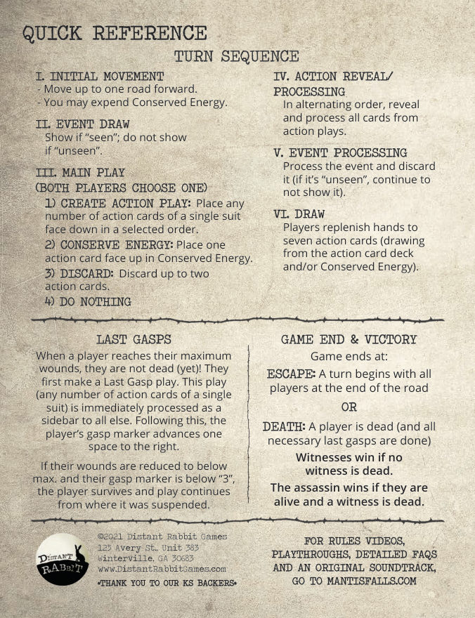

引言
你身处一个黑帮横行的小镇。20 世纪 40 年代，你们之中至少有一个人目击了不该看到的东西，现在你们必须穿过整个小镇，逃到有人能保护你们的地方去。但这段旅程注定凶险万分。
你被告知将有另一位目击者与你同行。同心协力，你们活下来的机会会大得多——但如果他并不是他自称的那个人呢？
《谜镇异途》（Mantis Falls）是一款「有时合作」（sometimes cooperative）的身份推理生存游戏：每位玩家在游戏开始时秘密获得一张身份牌（目击者或刺客），游戏可能全部都是目击者，也可能藏着一名刺客。合作还是背叛，由你自己决定。

1组件
基础游戏包含：
六种花色
分为「可见」与「不可见」
划分各区域
基础游戏仅含「都市人」
目击者 / 刺客
含快速参考
红色纽扣=伤口标记，黑色纽扣=垂死挣扎标记
「黄昏」×5、「夜晚」×5、「深夜」×5
用于替换损坏或自行创作
附加模组（盒内附带）
30 张牌。为 2–3 人游戏增加深度
12 张牌。3 人游戏必备
7 张牌 + 3 朵木玫瑰。进阶玩家变体（2–3 人）
主题音乐推荐
- 《Mantis Falls Original Soundtrack》——Distant Rabbit（免费，www.MantisFalls.com/soundtrack）
- 《Dolores》与《Piano Nights》——Bohren & Der Club Of Gore
- 《Soundtrack from Twin Peaks》——Angelo Badalamenti
- 《Turning Point》——Benny Golson
更多音乐推荐见 www.MantisFalls.com/music。

2游戏目标
目标取决于游戏开始时分配的身份牌（目击者或刺客）。每位玩家在准备阶段获得一张身份牌，但在游戏结束前不得向他人展示。一局游戏可能只有目击者，也可能有一名刺客：
- 若你是目击者：你的目标是让所有目击者（包括你自己）存活。当所有玩家都活着抵达终点，或刺客死亡时，你的游戏可以圆满结束。
- 若你是刺客：你的目标是让一名目击者死亡并让自己存活。只有当一名目击者死亡时，你的游戏才能圆满结束。
- 刺客与目击者同时死亡的局面对所有玩家而言都是平局。
3学习曲线
《谜镇异途》是一款讲究对策与预判的游戏，随着经验与技巧的积累会愈发有趣。通常需要多次游玩才能开始理解其中的策略可能。建议先阅读本手册末尾的策略指南（第 24 节），并把最初的几局当作「练习」。掌握了基础之后，尽快考虑加入「完整循环」模组，它会为游戏增加相当可观的深度！
4模组
你的盒中装有《谜镇异途》基础游戏和三个附加模组。可以自行搭配组合来定制游戏。整合方式见本手册第 21–23 节。
完整循环：增加复杂度，带来更深入的体验。掌握基础游戏后（也许玩过一两局之后）就加入它吧。
玫瑰之下：为进阶玩家准备的变体；增加资源管理与牌库操控。
三人组：3 人游戏必备。所有 3 人游戏都要使用，2 人游戏一律不用。
5游戏准备
- 游戏垫：将游戏垫放在游戏区域中央；许多卡牌和牌库都会放在它上面。
- 道路：在游戏垫上，道路牌构成一个 3×4 的网格，玩家将以迂回（serpentine）的路线行进。按如下方式摆放：
- 将道路牌的「起点」和「终点」按图示放在相应位置。
- 洗混其余道路牌，并从每种类型（黄昏、夜晚、深夜）中各随机移出一张，移出游戏（不要看）。
- 将其余道路牌按图示正面朝下放置（黄昏在底排、夜晚在中排、深夜在顶排）。
- 行动牌：先把「午夜」（Midnight）行动牌挑出来（基础游戏中有七张，外观独特并带有标记）。按如下方式分配：
- 洗混其余五张午夜牌，将三张正面朝下放在道路中段旁（「夜晚行动」区），另外两张正面朝下放在「终点」道路牌旁（「深夜行动」区）。
- 分配好午夜牌后，洗混剩余的行动牌，给每位玩家正面朝下发六张（算上各自的午夜牌，每位玩家初始应有七张行动牌）。将其余牌库正面朝下放在游戏垫标示的区域内。
- 玩家棋子：每位玩家将所选棋子放在「起点」上。
- 生命轨：每位玩家获得一个与所选棋子颜色匹配的生命轨（正面朝上）。红色纽扣放在「0」伤口上，黑色纽扣放在「0」垂死挣扎上。
- 身份牌：洗混身份牌（2 人游戏：两张目击者/一张刺客；3 人游戏：三张目击者/一张刺客）。给每位玩家正面朝下发一张，并将一张移出游戏（不要看！）。
- 角色牌：给每位玩家正面朝上发一张「都市人」（Urbanite）。

6开始游戏
- 玩家们查看自己的身份牌，并保持正面朝下。
- 翻开玩家棋子前方第一张黄昏道路牌。
- 随机决定起始玩家。
- 最后行动的玩家从盟友牌库中随机抽取一张盟友牌。
8回合流程
玩家轮流进行回合。你的回合按以下顺序进行：
（1）创建一次行动出牌：将任意数量的同花色行动牌（琥珀黄、花岗岩灰、猎人绿、丁香紫、皇室蓝或午夜）按你选定的顺序正面朝下放在自己面前（这些牌构成该玩家的「行动出牌」序列）。
（2）保存实力：将你的一张行动牌正面朝上放入保存实力区（见第 15 节）。
（3）弃牌：正面朝下弃掉至多两张行动牌。
（4）让过。
7活跃玩家与旁观者（仅 3 人游戏）
在 3 人游戏中，回合按顺时针轮转。玩家以轮换的二人组（「活跃玩家」）进行游戏，每回合有一名玩家成为「旁观者」：
9旁观者能力（仅 3 人游戏）
10道路
概览
每张道路牌代表「一条道路」：游戏中最小的移动单位（你的棋子在道路上的位置无关紧要）。不同区域（黄昏、夜晚、深夜）会被其他卡牌引用，并有不同的位置细节（伏击数量等），但除此以外并不赋予特定规则。
移动与视野
在道路上的移动遵循迂回路线（见第 5 节图示）。当道路牌直接位于任何玩家棋子的正前方时，将它翻至正面朝上（玩家总能看见走得最远的玩家前方至少一条道路）。一旦翻至正面朝上，道路牌就再也不会翻回背面朝下。
道路起点与终点
第一张道路牌是「道路起点」，最后一张是「道路终点」。当玩家抵达道路终点时，游戏并不会结束（见第 20 节）。任何玩家落在终点时，从「深夜行动」区拿一张自己选择的牌，并将其余牌翻回正面朝下。位于道路终点的玩家之后继续正常进行回合，只是不再向前移动。
红灯数字
所有道路牌左上角都有三个「红灯数字」（绿色、黄色和红色）。这些数字常被事件牌引用；此时，它总是指正在执行事件的玩家（即当前回合玩家）所在位置的红灯数字。
电话与公交站
一些道路牌右下角带有电话或公交站符号。卡牌可能会引用这些地点，但除此之外这些地点没有特殊规则。
伏击（带圈数字）
如果你停在一张右下角带有圈数字的道路上，你必须随机弃掉该数量的行动牌，并受到该数量的伤口（按此顺序）。与往常一样，行动牌正面朝下弃掉。经过（而非停驻）伏击不会受到惩罚。
「断路」
夜晚道路中有一条是「断路」。你不能停在这条路上。如果你的移动让你落到此处，你移到它前面那条路上。不过，如果你有足够的移动力，也可以正常穿过这条路（例如通过提供移动的行动牌）。任何玩家跨过断路前进时，他们查看「夜晚行动」区，选一张自己选择的牌加入手牌，并把其余牌翻回正面朝下。（有些对局没有断路，因为它的牌在准备时被随机移除了。这种情况下，没有玩家能获得「夜晚行动」区的牌。）
受阻移动
有些效果让玩家在移动与其他选项之间做选择。如果你的移动受阻（因道路终点、阻止移动的卡牌等），你仍可以选择移动，但只能移动到允许的距离。

11事件
事件由当前回合玩家执行，并且只在所有行动执行完毕之后进行（绝不在抽到它时立刻执行）。按照当时的变量执行（例如，如果在行动执行期间因移动导致红灯数字变化，事件也会随之变化）。事件可能是「险情」（incident）或「敌袭」（opposition），同时也可能是「可见」或「不可见」。以下逐一说明。
险情与敌袭
- 「险情」事件是有害事件（例如地震或踩到碎玻璃）。
- 险情可能被某些卡牌「预防」，但那些对事件敌袭造成伤口的卡牌对险情毫无用处。
- 如果险情未被预防，那么「效果」和「奖励」都会在事件执行时发生。（如果事件效果被预防，则两者都不发生。）
- 「敌袭」事件是你正面对的一个敌人。
- 与险情一样，敌袭的效果可以被预防事件的卡牌完全预防。
- 如果玩家们当回合执行行动时共同对敌袭造成的伤口至少等于敌袭的「生命值」，则敌袭被「击败」。
- 根据敌袭是否被击败，在事件执行时执行相应的结果。
可见与不可见
- 「可见」事件对所有人可见。抽到后翻至正面朝上，供所有人查看。
- 在你的回合的事件执行阶段，你执行该事件的效果，然后把它正面朝下放入弃牌堆。
- 「不可见」事件只对抽到它的玩家（当前回合玩家）可见。
- 抽到不可见事件时，你不能把它展示给任何人，即使你想也不行。但你可以选择以任何方式描述这张牌（什么都不说、说实话、虚张声势等等）。
- 在你的回合的事件执行阶段，你执行该事件的效果，然后把它正面朝下放入弃牌堆。尽管没人会看到这张牌，你必须准确执行它（否则就是单纯的作弊）。
不可见事件：你能虚张声势什么、不能虚张声势什么
虽然你可以在这张牌被执行之前对不可见事件虚张声势，但在执行时不能改变事件的实际效果（那就是作弊）。不过，你可以不完全诚实地说明效果的来龙去脉。这里有两个例子：
- 一张事件牌可能要求受到伤口「由你选择在玩家之间分配」。这种情况下，你可以选择让另一位玩家承受全部伤口，而不透露存在任何选择。
- 如果该回合事件的效果被预防了，那么在事件执行时，没有必要解释如果未被预防该事件本来会做什么。

12行动
花色
行动牌有六种「花色」（琥珀黄 amber、花岗岩灰 granite、猎人绿 hunter、丁香紫 lilac、皇室蓝 royal 和午夜 midnight），由左上角的文字和符号标示；见图示。行动出牌可以包含任意数量的同花色行动牌。
效果
效果总是由打出该牌的玩家执行。粗体文字是效果的（通常不精确的）摘要标题；必要时，标题下方的文字详细描述效果。当一张行动牌列出多个效果（例如「1」「2」和「有时」）时，所有效果都要按所列顺序执行（不能挑挑拣拣！）。
「有时」效果
带有「有时」（sometimes）效果的卡牌（见图示）可以在任何行动牌打出时打出，但「有时」效果只有在条件满足时才会发生。
揭示/执行顺序
- 出牌顺序：创建行动出牌的玩家应将卡牌按希望被揭示和执行顺序，从左到右正面朝下放在自己面前。
- 揭示/执行顺序：当只有一名玩家创建行动出牌时，该玩家按放置顺序揭示并执行这些牌。当同一回合两名玩家都创建了行动出牌时，行动按交替顺序揭示并执行，从当前回合玩家开始。
此场景中轮到 Jack 的回合。主要出牌时，Jack 创建了两张牌的出牌，正面朝下从左到右放在自己面前。Jill 随后创建了三张牌的出牌，正面朝下从左到右放在自己面前。
行动揭示/执行时，Jack 会揭示（翻至正面朝上）他的第一张牌（图中的「1」）并完整执行它。然后 Jill 揭示她的第一张牌（图中的「2」）并完整执行它。Jack 接着揭示并执行他的第二张牌（「3」），然后 Jill 揭示并执行她的第二张牌（「4」）。由于 Jack 没有更多牌要执行，Jill 继续揭示并执行她的第三张牌（「5」）。最后一张牌执行完毕后，五张行动牌正面朝下放入弃牌堆，游戏进入事件执行阶段。
行动摘要
- 行动出牌可以是任意数量的单花色牌。
- 行动出牌总是正面朝下创建，且在所有玩家完成主要出牌之前不会揭示。
- 行动出牌一张一张地按交替顺序揭示并执行。

13状态与苦难
状态（Conditions）
一些行动牌的效果会写明把这张牌作为「状态」保留。执行此类效果时，把牌正面朝上放在玩家面前（在其「掌控」之下），状态效果一直保持生效，直到有东西（例如行动牌或事件牌）移除这张牌。（当状态效果提到「你」时，指的是掌控该状态的玩家。）
苦难（Afflictions）
苦难（在模组而非基础套组中找到）与状态的玩法完全一样，只是没有任何东西能移除它们。
「任意时刻」效果
一些状态和盟友拥有玩家可以「任意时刻」使用的效果（见上图 Gun）。你不能实施此类效果的唯一时机是：
- 另一张牌正在被执行，或刚在行动出牌中被揭示（见第 19 节「时机」）。
- 你是旁观者时（仅 3 人游戏；见第 7 节）。
14盟友
盟友是来自某些行动和事件的帮手牌。
获得盟友
当玩家被要求「拿取」一张盟友牌时，他们正面朝上翻阅盟友牌库，拿取任意一张自己喜欢的牌。
「未完成」的盟友
盟友牌左上角写着完成要求。如果玩家拥有的该特定盟友牌数量少于要求数量，这些牌保持正面朝下放在玩家处。该盟友「未完成」，不提供任何效果。
「完成」的盟友
如果玩家拥有的匹配盟友牌数量达到盟友所要求的数量（见左上角），该盟友「完成」。这意味着它被翻至正面朝上放在玩家面前，其效果生效。
弃掉盟友
弃掉的盟友总是返回盟友牌库（没有盟友弃牌堆）。如果某个效果要求把盟友返回牌库，指的是整个完成的盟友（而不只是一张牌）。
盟友摘要
- 在满足完成要求之前，盟友牌保持正面朝下放在你处，被视为「未完成盟友」。
- 一旦满足完成要求，它们翻至正面朝上放在你面前，并具有持久效果。
15保存实力
「保存实力」：作为主要出牌，玩家可以通过把自己的一张行动牌正面朝上放入保存实力区（游戏垫顶部）的四个空格之一来「保存实力」。放入保存实力的牌当回合不产生任何效果，但可能在未来为玩家提供价值（如下所述）。
使用保存实力
- 抽取：每当玩家抽取一张行动牌时，可以选择从保存实力区而非抽牌堆抽取。
- 消耗：在你的回合的初始移动阶段开始时，如果保存实力区已满，你可以「消耗」保存实力，将四张保存的牌全部移到行动弃牌堆。这样做会为你提供以下两项好处中选择一项：
- 初始移动增加一条道路（移动两条道路而非一条）
- 恢复你的一处伤口
其他说明
- 消耗保存实力以增加初始移动，结果是一次移动两条道路（不是先向前移动一条道路、再选择再次移动）。这次移动可以用来越过断路和伏击。
- 如果保存实力区「已满」（已有四张牌），本应放入保存实力的牌将被弃掉。
16伤口与生命轨
伤口累积
玩家从各种来源累积性地受到伤口。从零开始，用生命轨上的红色纽扣（「伤口标记」）记录。
最大伤口
每位玩家会有一张角色牌，写明他们的最大伤口数（基础套组仅包含「都市人」角色，最大伤口值为八；完整循环模组增加了最大伤口为七和九的角色）。任何玩家的伤口永远不能超过其最大值。（例如，如果你距离最大值还差一处伤口，却受到了三处伤口，你只会受到一处伤口，到达最大值，忽略另外两处伤口。）如果玩家达到最大伤口，他们还不会死！他们改为进行一次「垂死挣扎」出牌（第 17 节）。
垂死挣扎轨
生命轨上还有一个位置，用来记录玩家已经进行过多少次垂死挣扎（第 17 节）。黑色纽扣（「垂死挣扎标记」）从零开始，在玩家每次垂死挣扎出牌结束时向右移动一格。
- 你的伤口永远不能超过你的最大值。
- 达到最大伤口并不意味着你死了！你要先进行一次垂死挣扎出牌（第 17 节）。
17垂死挣扎
如果你达到最大伤口，你还不会死！首先，你要进行一次「垂死挣扎」出牌。如果有什么东西让你达到最大伤口，你需要这样做：
- 完成当前牌的执行：如果那张让你达到最大伤口的牌还有更多内容要执行，就把它完整执行完毕。
- 进行一次垂死挣扎出牌：暂停一切，创建一次行动出牌（即将任意数量的同花色行动牌正面朝下放在你面前），作为一切之外的副线。然后按顺序揭示并执行所有这些牌。你的垂死挣扎牌执行完毕后，把你的垂死挣扎标记向右移动一格。
- 判定存活/死亡：
- 存活：如果你的伤口低于你的最大值（例如因为你打出过一张治疗牌）且你的垂死挣扎标记低于「3」，那么你存活过了这次垂死挣扎。这种情况下游戏继续；从暂停处立即恢复游戏。
- 死亡：反之，如果你的伤口处于最大值或你的垂死挣扎标记在「3」，那么你死了（第 18 节），游戏即将结束。如果另一位玩家不在其最大伤口，游戏立刻结束（第 20 节）。然而，如果另一位玩家正处于最大伤口，那么他们也要进行一次自己的垂死挣扎出牌（他们也可能没能存活）。在他们垂死挣扎之后，游戏结束。

垂死挣扎流程图：有些人可能会觉得在解决垂死挣扎时参考下面的图表很有用。
非垂死挣扎出牌导致至少一名玩家达到最大伤口 → 完成当前牌的执行并暂停行动 → 有多少玩家处于最大伤口？
- 一名：该玩家进行垂死挣扎 → 该玩家是否仍处于最大伤口，或他们的垂死挣扎标记在「3」？否 → 存活，游戏从暂停处继续。是 → 那位玩家死亡，游戏结束。
- 两名：回合玩家选择两名玩家中的一名 → 该玩家进行垂死挣扎 → 该玩家是否仍处于最大伤口，或他们的垂死挣扎标记在「3」？否 → 该玩家存活，轮到另一位玩家进行垂死挣扎 → 该玩家是否仍处于最大伤口，或标记在「3」？否 → 游戏从暂停处继续。是 → 所有以最大伤口或标记在「3」结束垂死挣扎的玩家死亡，游戏结束。
18死亡
一名玩家死亡，如果满足以下任一条件：
- 他们在完成垂死挣扎后仍处于最大伤口
- 他们的垂死挣扎标记达到 3
玩家的死亡会结束游戏（尽管如果另一位玩家处于最大伤口，可能需要先解决一次垂死挣扎；第 17 节）。死亡的玩家不能获胜，但有可能平局（第 20 节）。
19其他规则与说明
时机（卡牌总是完整执行）
当行动出牌中的行动被揭示时，除了由揭示触发的特定选择/效果（例如 Foresight）之外，行动会立即开始执行。对游戏中所有类型的卡牌来说，一旦一张卡牌开始执行，在整张卡牌执行完毕之前，任何其他事情都不能发生。
没有弃牌阶段
如果你回合结束时手牌超过七张，无需弃牌。
回合玩家决定顺序
如果玩家需要同时做某事（例如两人因同一事件都要进行垂死挣扎），回合玩家选择谁先进行。
抽牌堆与弃牌堆
行动牌和事件牌的弃牌堆都是正面朝下且隐藏的。如果任何抽牌堆耗尽，洗混其弃牌堆组成新的抽牌堆。
仅目击者效果
一些卡牌效果（显著的例子是「呼叫杀手」）只能「在你确实是目击者时」使用。主题上的解释是，目击者拥有能在某些情况下帮忙的强大朋友。一个人的身份不能靠虚张声势来使用这些效果。
不要展示（或「证明」）正面朝下的卡牌
你可以告诉其他玩家（无论真假）你有什么牌，但正面朝下的牌不能提前揭示。你也不能试图通过逐字朗读牌面文字、描述视觉细节等方式来「证明」你拥有某张牌。
几乎什么都能谈
除了上面直接描述的之外，你谈论什么没有限制。
20游戏结束与胜利
游戏在以下任一情况发生时结束：
随后揭示身份，判定胜利：
2 人游戏胜利条件
- 若全是目击者：玩家们共同胜利/失败。若玩家逃脱则双赢；否则双输。
- 若有刺客：刺客在目击者死亡且刺客存活时获胜。目击者在刺客死亡且目击者存活时获胜，或者玩家逃脱时获胜。
3 人游戏胜利条件
- 若全是目击者：玩家们共同胜利/失败。若玩家逃脱则全员获胜；否则全员失败。
- 若有刺客：刺客在至少一名目击者死亡且刺客存活时获胜。目击者在刺客死亡且两名目击者都存活时获胜，或者玩家逃脱时获胜。
21完整循环模组（2 人或 3 人游戏）
内容：30 张牌
概览：完整循环为游戏增加更大的深度；一旦你对游戏足够熟悉，就尽快加入它。如果你不介意稍陡的学习曲线，甚至可以希望在第一局就加入它。
准备：把角色牌、行动牌和盟友牌分别加入各自对应的牌库。
新规则
- 游戏开始时，角色牌现在随机正面朝下发给玩家。（未使用的角色牌不看就放回盒中。）
- 角色牌保持正面朝下，直到玩家达到最大伤口。此时，他们的角色牌被翻至正面朝上，并在游戏剩余时间内保持公开。
22三人组模组（仅 3 人游戏）
内容：12 张牌（包括两张参考牌）
概览：三人组是 3 人游戏必备；在 3 人游戏中加入它，在 2 人游戏中排除它。
准备：（1）把身份牌和行动牌分别加入各自对应的牌库；（2）如有帮助，把两张参考牌放在玩家视线范围内。
新规则
3 人游戏的规则在本手册中始终以黑色框突出显示。它们可见于第 5、7、9、19 和 20 节。
————— 基础游戏规则结束 —————
23玫瑰之下模组（2 人或 3 人游戏）
内容：七张牌（包括一张参考牌）和三朵木玫瑰
概览：玫瑰之下是为进阶玩家准备的可选变体。它提供新的组合构筑和资源管理形式，并为牌库操控创造强大的机会。随你喜欢地加入它吧！游戏开始时，每位玩家与一名随机的「玫瑰之下特工」配对——一名以付出代价换取强力效果的雇佣兵。到最后，这些特工在债务全部清偿之前，不会让玩家离开谜镇异途。
准备
- 给每位玩家随机发一张「地平线」（Horizon）牌和一张「天空」（Sky）牌（未使用的放回盒中）。玩家把这两张牌正面朝上并排放在自己的游戏区域内，组成他们的「玫瑰之下特工」。
- 每位玩家拿一朵木玫瑰，放在自己的特工旁边。
- 如有帮助，把参考牌放在伸手可及之处。
新规则
每位特工都有一个名字和昵称。（图示中的特工是「Kit the Moonlighter」。）
用准备阶段获得的木玫瑰，玩家将在游戏中「埋藏」行动牌（即把它们正面朝下叠放在玫瑰之下）。玩家可以随时查看自己埋藏的牌，但不能查看另一位玩家的。
如果你选择「埋藏」，则按你的牌上所述，从行动牌库拿行动牌，埋到你的木玫瑰下面。
如果你改为选择「赎回」，你选择一个列出的效果，通过支付至少其列出的费用来实施它一次。支付方式是把任意数量你选择的埋藏牌移到行动弃牌堆，使用以下价值体系：
| 支付 | 价值 |
|---|---|
| 任意一张牌（用作支付时不展示牌面） | 1 |
| 两张同花色牌（牌面向所有人展示） | 3 |
| 三张同花色牌（牌面向所有人展示） | 5 |
与你的特工见面后，继续回合（从执行触发见面的那张已揭示行动牌开始）。
正如特工牌上所述，任何你达到最大伤口的时刻，你可以立即用你埋藏的牌支付至多五点（采用与赎回相同的价值体系），抽取等量的行动牌加入手牌。之后，你必须选择并弃掉手牌，直到手牌总数降为七张。
清偿特工是逃离谜镇异途所必需的，也可能是破坏其他玩家的有效方式。实现方式如下：
- 在道路终点并持有特工：在你的回合初始移动之后（立刻），如果你位于道路终点且仍有你的特工（即它还没有被你自己或另一位玩家清偿），你可以选择清偿你自己的特工或另一位玩家的特工（不能同时清偿两者）。
- 支付代价：要清偿你自己的特工，用你埋藏的牌（使用与赎回相同的价值体系）支付列出的第一个清偿价格（在我们的示例中为五）。要清偿另一位玩家的特工，支付你特工上列出的第二个清偿价格（在我们的示例中为八）。
当玩家的特工被清偿后，特工及配套的木玫瑰被移出游戏且不会替换。他们所有埋藏的牌都正面朝下弃掉。对该玩家而言，其特工的所有弱点和能力（包括清偿其他特工的能力）都不再生效。
在玫瑰之下中，一起活着走到道路终点不再足以「逃脱」（这是全目击者对局中唯一的获胜终局条件；见第 20 节）。现在额外要求所有特工也都必须「清偿」（如下所述）。即使所有玩家都活着位于道路终点，玩家仍继续轮流行动，直到一名玩家死亡（且所有必要的垂死挣扎完成；「死亡」），或直到一个回合开始时所有玩家都活着位于道路终点且所有特工都已清偿（「逃脱」）。
特工要点
- 开场埋葬：游戏开始时，每位玩家按他们特工的数字圆点标记所示数量，从行动牌库顶拿取相应数量的行动牌，埋在自己的木玫瑰下。（这里 Kit 有两个圆点，所以你会从牌库顶埋两张行动牌。）
- 你的弱点：每位特工都有一个负面效果。在你的特工被清偿之前，它持续生效。（注意：如果某个弱点写明卡牌「对你没有效果」，你仍然可以打出它们，而且在你的行动出牌中揭示它们仍可触发其他卡牌上的效果。）
- 「与你的特工见面」：在整个游戏中，每当你在行动出牌中揭示出符合你特工见面要求的花色牌时，你就能「与你的特工见面」。（这里 Kit 的要求是：你行动出牌序列中的第一张琥珀黄牌，或第三张猎人绿牌。）此刻，你暂停执行那张已揭示的行动牌，先「埋藏」或「赎回」（由你选择）。

24新手策略建议
对刺客而言，也许你最大的资产是你知道这是一局对抗游戏。尽可能利用这一点！假装自己是一位诚实的队友，假装害怕另一位玩家，只把你第一个不容置疑的刺客式举动留到关键时刻。
目击者的一个关键优势是他们能使用极其强大的「呼叫杀手」行动牌（包含在开牌中）对怀疑是刺客的玩家造成大量伤害。刺客策略的很大一部分应该是确保这张牌不会用在自己身上。对目击者来说，保护这张牌和使用它的能力同样重要。注意，这个效果只有在离电话一条道路以内（任一方向）打出时才生效。因此玩家移出电话范围的时刻可能至关重要，因为这些可能是刺客出击的最佳时机！
如果你是刺客，维持目击者的信任可能不足以阻止他们试图杀你。想想看：如果一名目击者面临必死，他们可能没什么可失去的，不介意拉你垫背（无论他们是否怀疑你）。作为刺客，你应该警惕目击者在走投无路或失去希望后很可能诉诸这类攻击。你最好的行动有时可能是大力帮助目击者（甚至救他们的命），如果这能把他们最绝望的时刻推迟到你更有能力承受最后一击的时候（例如他们不靠近电话和/或你准备好治疗时）。
与一些只有特定身份才有理由撒谎的隐藏身份游戏不同，在《谜镇异途》中，不诚实对任何玩家都是有用的策略。因为目击者必须时刻为自己的安全担忧，永远无法确定他人的动机，他们可能聪明地使用欺骗和敌对行动来把战术局势扭向有利于自己的保护和利益。正因如此，被抓到撒谎的刺客不一定就被识破为叛徒。相反，他们应该试着把自己的不诚实辩解为一名恐惧或不信任的目击者的举动。
像「Medicine」和「Doctor's Bag」这样的行动牌乍看可能不起眼，但任何能治疗你的东西都可能成为生与死的分界。它们是稀有而珍贵的牌，应被视为游戏中最强大的牌之一。在很多情况下，你会想把它们留到最需要的时候再用（往往是在垂死挣扎出牌中；见下文）。
因为垂死挣扎标记达到三就会死亡，玩家可能以为应该积极避免使用垂死挣扎。事实并非如此！垂死挣扎可能极具价值，所以与其避免使用它们，不如想想如何仔细使用它们以获取最大收益。考虑以下：
- 垂死挣扎提供整整一次额外的行动出牌。用得好的话，这可能改变游戏走向。
- 没有过量伤害（你的伤口总数不能超过最大值）意味着垂死挣扎往往是最好的治疗时机。例如，如果你距离最大值还差一处伤口，而某样东西将要对你造成四处伤口，那么在垂死挣扎之前恢复一处伤口救不了你，但在垂死挣扎期间恢复则能救你。
《谜镇异途》中有许多强大的行动牌，但最好的出牌往往是组合驱动或情境依赖的。你可能会发现，只有少数几张牌（例如治疗牌和午夜牌）在所有情况下都值得保留。别让你的手牌被一些你毫无具体计划的「强大」牌卡住。要愿意用你的主要出牌去弃掉或保存这些牌，去找你更能用得上的牌！
快速参考
回合流程
- 初始移动：向前移动至多一条道路。你可以消耗保存实力。
- 抽取事件：「可见」则展示；「不可见」则不展示。
- 主要出牌（两位玩家各选一项）：
1) 创建行动出牌：将任意数量的同花色行动牌按选定顺序正面朝下放置。
2) 保存实力：将一张行动牌正面朝上放入保存实力区。
3) 弃牌：弃掉至多两张行动牌。
4) 让过。 - 行动揭示/执行：按交替顺序揭示并执行行动出牌中的所有牌。
- 事件执行：执行事件并弃掉它（如果是「不可见」，继续不展示它）。
- 抽牌：玩家把手牌补回到七张行动牌（从行动牌库和/或保存实力区抽取）。
垂死挣扎
当玩家达到最大伤口时，他们还不会死！他们先进行一次垂死挣扎出牌。这次出牌（任意数量的同花色行动牌）作为一切之外的副线立即执行。之后，玩家的垂死挣扎标记向右移动一格。
如果他们的伤口降到最大值以下且垂死挣扎标记低于「3」，玩家存活，游戏从暂停处继续。
游戏结束与胜利
游戏在以下情况结束：
- 逃脱：一个回合开始时所有玩家都位于道路终点
- 死亡：一名玩家死亡（且所有必要的垂死挣扎已完成）
若没有目击者死亡，则目击者获胜。
若刺客存活且一名目击者死亡，则刺客获胜。

版权信息
版权（Copyright）：©2021 Distant Rabbit Games
地址：125 Avery St., Unit 383, Winterville, GA 30683
官网：www.DistantRabbitGames.com
致谢：感谢我们的 Kickstarter 支持者。
规则视频、完整游戏演示、详细 FAQ 与原创配乐，请访问 MANTISFALLS.COM。